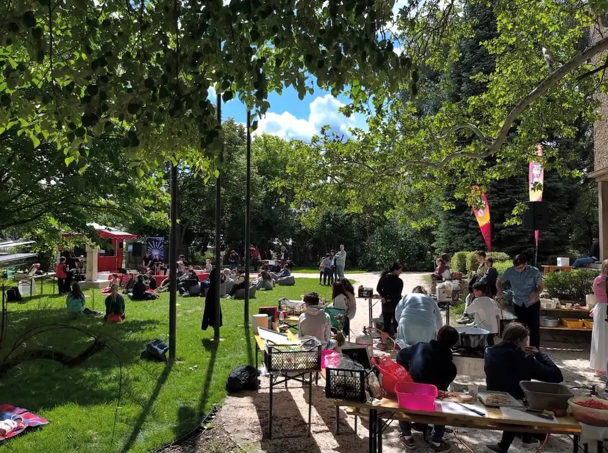
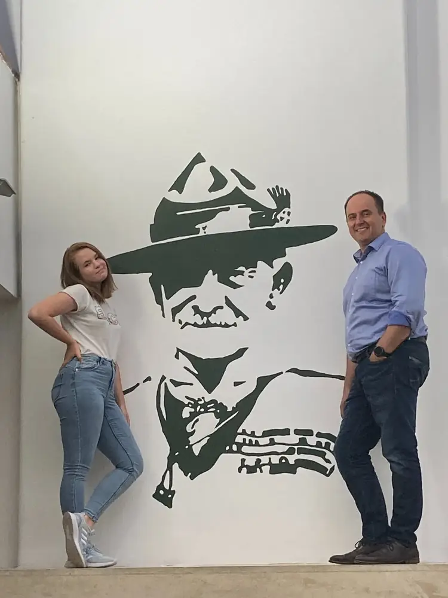
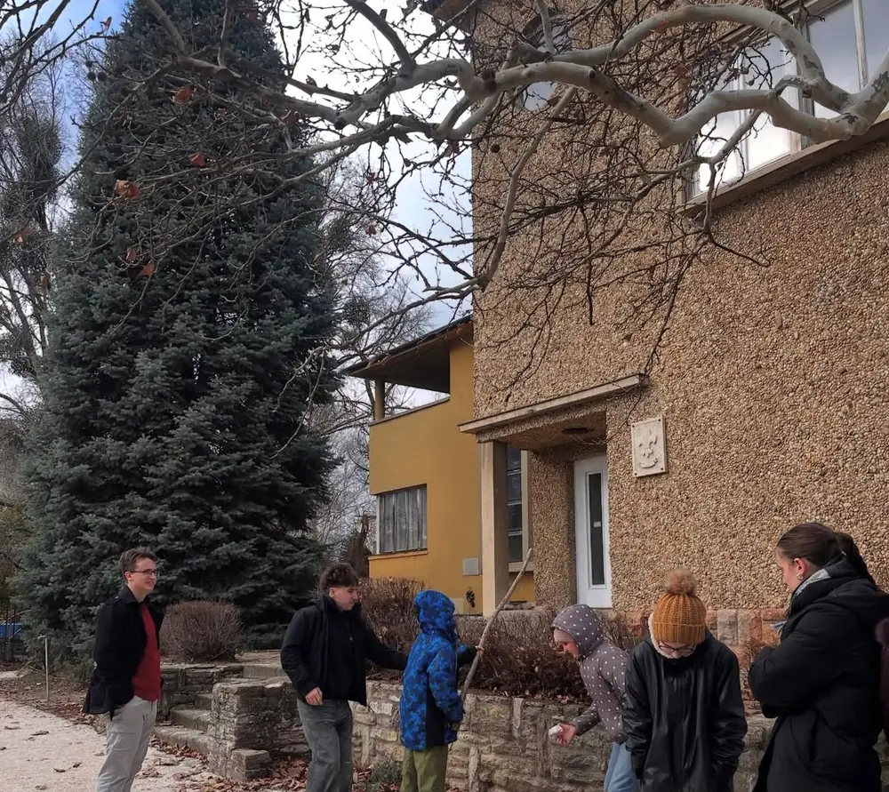
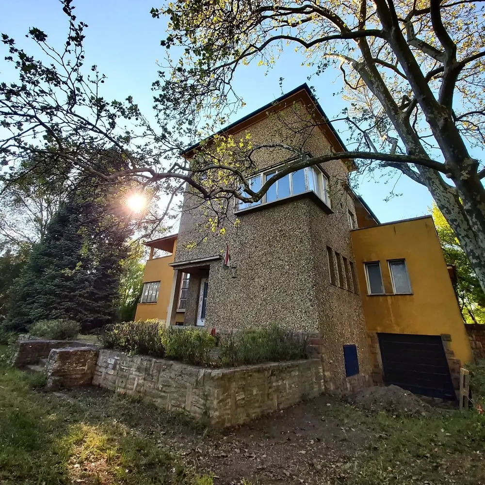
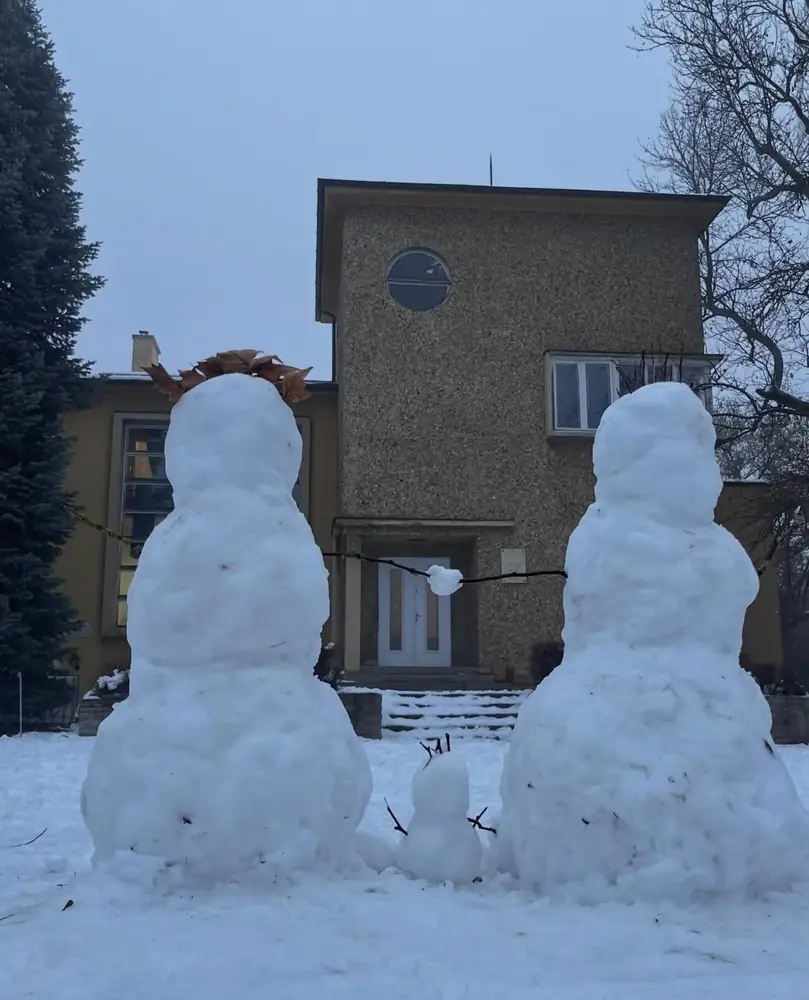
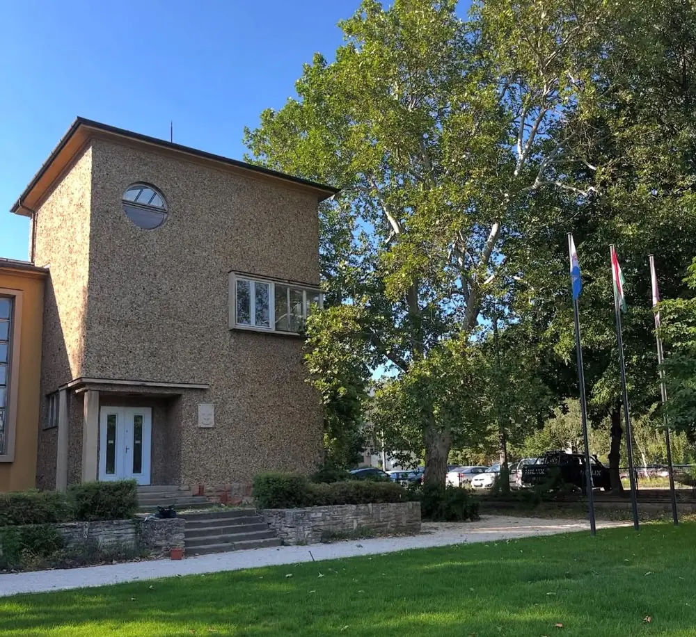

A Bezsilla villa az 1930-as évek elején épült a Rákos-patak partján, Rákos Pál építész tervei szerint. A modernista, Bauhaus-stílusú ház névadója és egykori tulajdonosa dr. Bezsilla István, Pest vármegye tiszteletbeli ügyésze volt. Különlegessége, hogy van egy tükörkép-ikertestvére Budapesten, a XI. kerületben.
A második világháború alatt és után a villa lakatlan volt, és pusztult. 1951-től a rendőrség költözött be, később az Agrártudományi Egyetem tanárképző intézete kapta meg. A ház története a magyar történelemhez is kötődik: 1956. október 25-én a rendőrség épülete előtt tüntető tömegre lőttek, és a 17 éves Balázsovich András életét vesztette.
Az '56-os áldozatok emlékére 1989-ben fenyőfát ültettek a kertben, 1996-ban emléktáblát, 2001-ben pedig kopjafát és emléktáblát állítottak. Az emlékmű ma is áll a villa kertjében, és a városi '56-os megemlékezéseket rendszeresen itt tartják.
Forrás: Bezsilla villa – Gödöllői Városi Könyvtár és Információs Központ
Csapatunk régóta dolgozott azon, hogy legyen egy hely, ami igazán a miénk. A Bezsilla villát előbb használatba vehettük, később pedig a tulajdonunkba is került.
Az épület azonban nagyon megviselt állapotban várt ránk. Évekig üresen állt, felújítás nélkül: több helyen beázott, a parketta felpúposodott és megpenészedett, az egyik szobát pedig alá kellett dúcolni, mert életveszélyessé vált.
Az adományoknak, az önkormányzat és az állam támogatásának, valamint a cserkészek önkéntes munkájának köszönhetően a Bezsilla ma már használható állapotban van, és újra élet költözött a falai közé.
Sajnos újabb nehézséggel kell szembenéznünk: a ház régi alapja süllyedni kezdett a közeli patak felé. Ezt minél hamarabb meg kell állítanunk, ezért most erre gyűjtünk. A részletekről a Gödöllői cserkészház Facebook-oldalán olvashatsz bővebben.
Cím: 2100 Gödöllő, Cserkész köz 1.





